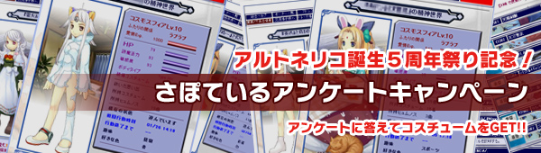
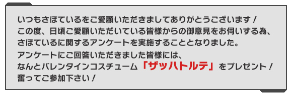

アルトネリコ５歳の誕生PARTY！トップ
｜
アルポータル
さぽているコスチューム「ザッハトルテ」の配布は終了致しました。
尚、アンケート回答のみは引き続き行なっております。

コスチューム：ザッハトルテ
【さぽている】とは？
誰でもお手軽に登録できて奥が深い、女の子育成ゲーム付き多機能ブログパーツです。
１日数回女の子とレッスンや調合を行い、アイテムや服、歌を作っていきます。また、ブログパーツとして女の子に好きな言葉を喋らせたり、お客さんから感想をもらったり・・・ということも可能です。
登録は簡単！興味を持ったら、以下のバナーから新規登録を行ってください。
サポーターＩＤ
パスワード
※アンケートの回答には、さぽているを登録しているサポーターＩＤをご使用下さい。
※市民ＩＤで回答されましても、無効となります。
※新規でさぽているにご登録頂く方は、ご登録頂いてからアンケートにご回答ください。
アルトネリコ５歳の誕生PARTY！トップ
｜
アルポータル